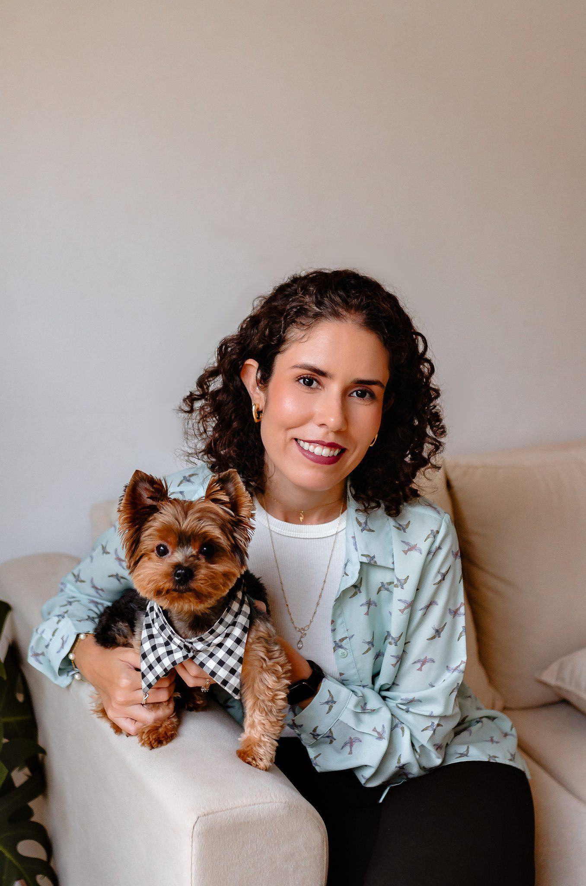

Em domicílio
Eu vou até a casa do pet para nutrição funcional, cannabis medicinal ou dermato-nutrição. A consulta de nutrição ou cannabis dura 2 horas.
Ver atendimento domiciliarMV Nathalia Maia · CRMV-RJ 15672
Sou médica veterinária. Trabalho com nutrição funcional e medicina integrativa para cães e gatos, com um cuidado mais empático, natural e aprofundado.

O atendimento é premium e olha para a base da saúde do pet, que é onde começam as doenças. Você escolhe o formato.
Eu vou até a casa do pet para nutrição funcional, cannabis medicinal ou dermato-nutrição. A consulta de nutrição ou cannabis dura 2 horas.
Ver atendimento domiciliarLaka Studio Pet (Tijuca), CAEMV (Engenho Novo) e HVN (Niterói). Para marcar, ligue para a clínica.
Ver atendimento em clínicasA consultoria / tele-orientação dura 1 hora, de onde você estiver. A Terapia Pet à distância fica só aqui, em 30 minutos.
Ver consultoria onlineQuem sou eu
Sou formada pela Universidade Federal Fluminense desde 2019. Trato meus pacientes da forma mais natural possível. Esse tem sido o meu lema.
Acredito em alimentação natural fácil, prática e que caiba no dia de quem cuida. Aqui não existe dieta pronta: o plano é do seu animal.
Plano alimentar para a espécie, a idade e a doença do pet. Modulação intestinal, peso, apetite e acompanhamento de pele, rim, fígado, coração, hormônios e articulações. Em domicílio e online.
Suporte em câncer, dor crônica, convulsão, dermatite, comportamento e pacientes terminais. O pet precisa já estar em acompanhamento veterinário presencial, com diagnóstico fechado. Em domicílio e online.
Diagnóstico e tratamento dermatológico junto com a nutrição funcional. Para dermatopatias, principalmente alérgicas, ou para quem quer cuidar da pele e ainda melhorar a alimentação e a longevidade do pet. Em domicílio e online.
Reiki e alinhamento psíquico, só na consultoria online, com hora marcada e sem precisar ligar a câmera. Depois da sessão eu envio um mini relatório no WhatsApp.
Ver Terapia Pet à distânciaVeterinários e estudantes podem marcar teleinterconsulta e consultoria de exame dermatológico.
“Nathalia é extremamente responsável, atenciosa e prestativa. Com um olhar cuidado, humanizado e individualizado para o pet.”
“Iniciei o tratamento dos meus 3 cachorros com ela e estou gostando muito. Sempre que preciso, ela responde prontamente.”
“Ela é maravilhosa. Super tranquila, boa ouvinte, tira sempre as minhas dúvidas. Cuidou do meu bebê, que está super bem.”
Filhotes estão crescendo e precisam de acompanhamento mensal até o fim dessa fase. É um período em que a dieta sem orientação falha fácil.
Depende do porte: cerca de 10 meses nos mini e até 24 meses nos gigantes.
Animais em modulação intestinal precisam de pelo menos 6 meses de tratamento.
Em associações, de forma online. Na receita eu indico o caminho de acordo com a necessidade do seu pet.
Eu monto um plano fácil, prático e de acordo com a sua rotina e com o que é possível para a casa.